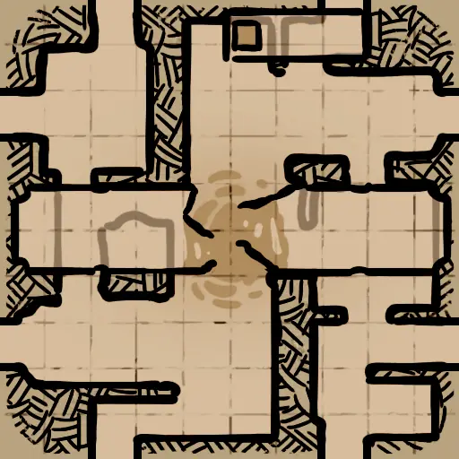
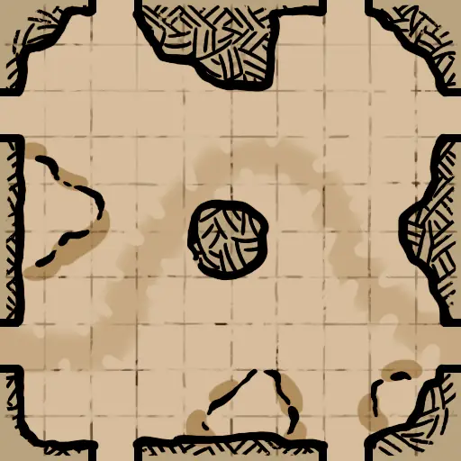

哥布林洞穴1层
岩洞湖 B (Cavern_Lake_B)CavernLake_03_HR_D.json
CavernLake_03.png | 找到 1 个位置 | 自动范围: ±1600

洞穴祭坛 B (Cave_Altar_B)Cave_Altar_02_HR_D.json
Cave_Altar_02.png | 找到 1 个位置 | 自动范围: ±1600

洞穴祭坛 A (Cave_Altar)Cave_Altar_Center_HR_D.json
Cave_Altar_Center.png | 找到 1 个位置 | 自动范围: ±1600

洞坑大厅 (CavePitHall)Cave_PitHall_HR_D.json
Cave_PitHall.png | 找到 4 个位置 | 自动范围: ±1600

峡谷 A (Valley_A)Cave_Valley_HR_D.json
Cave_Valley.png | 找到 1 个位置 | 自动范围: ±1600

废墟2层地牢
祭坛室 (AltarRoom)Crypt_AltarRoomAB_HR_D.json
AltarRoomAB.png | 找到 1 个位置 | 自动范围: ±1600

双子墓地 (Twin_Cemeteries)Cemetery_01_HR_D.json
Cemetery_01.png | 找到 2 个位置 | 自动范围: ±1600

巨型环厅 (Wheel)CenterTower_HR_D.json
CenterTower.png | 找到 1 个位置 | 自动范围: ±6400

门控房间 (Gated_Rooms)ComplexHall_HR_D.json
ComplexHall.png | 找到 2 个位置 | 自动范围: ±1600

中心祭坛 (Center_Altar)FourWayConnect_HR_D.json
FourWayConnect.png | 找到 1 个位置 | 自动范围: ±1600

中心桥 (Center_Bridge)HBridge_HR_D.json
HBridge.png | 找到 1 个位置 | 自动范围: ±1600

迷你环厅 (Mini_Wheel)TheMiniWheel_HR_D.json
TheMiniWheel.png | 找到 1 个位置 | 自动范围: ±1600

黑暗祭司 (Dark_Priests)CorridorofDarkPriests_HR_D.json
CorridorofDarkPriests.png | 找到 1 个位置 | 自动范围: ±1600

十字路口 (Cross_Road)CrossRoad_HR_D.json
CrossRoad.png | 找到 2 个位置 | 自动范围: ±1600

金字塔 (Pyramid)LowPyramid_HR_D.json
LowPyramid.png | 找到 1 个位置 | 自动范围: ±1600

地下神坛 (Underground_Altar)UndergroundAltar_HR_D.json
UndergroundAltar.png | 找到 1 个位置 | 自动范围: ±1600

哥布林洞穴2层
断石桥 (BrokenStonebridge)Firedeep_BrokenStonebridge_D.json
BrokenStonebridge.png | 找到 1 个位置 | 自动范围: ±1600

采矿通道 (MiningPassage)Firedeep_MiningPassage_D.json
MiningPassage.png | 找到 1 个位置 | 自动范围: ±1600

冰图2层
冰渊魔窟 (IceAbyss_DemonicDen)IceAbyss_DemonicDen_D.json
IceAbyss_DemonicDen.png | 找到 1 个位置 | 自动范围: ±1600

冰封之喉 (IceAbyss_FrostMaw)IceAbyss_FrostMaw_D.json
IceAbyss_FrostMaw.png | 找到 1 个位置 | 自动范围: ±1600

石柱廊 (IceAbyss_Pillars)IceAbyss_Pillars_HR_D.json
IceAbyss_Pillars.png | 找到 1 个位置 | 自动范围: ±1600

沉墟柱廊 (IceAbyss_SinkingPillars)IceAbyss_SinkingPillars_HR_D.json
IceAbyss_SinkingPillars.png | 找到 1 个位置 | 自动范围: ±1600

阶梯山丘 (IceAbyss_StaircaseHill)IceAbyss_StaircaseHill_HR_D.json
IceAbyss_StaircaseHill.png | 找到 1 个位置 | 自动范围: ±1600

冰图1层
十字路口 (IceCave_CrossRoad)IceCave_CrossRoad_HR_D.json
IceCave_CrossRoad.png | 找到 1 个位置 | 自动范围: ±1600

双子洞穴 (IceCave_DualCaverns)IceCave_DualCaverns_HR_D.json
IceCave_DualCaverns.png | 找到 1 个位置 | 自动范围: ±1600

四方路 (IceCave_FourRoute)IceCave_FourRoute_HR_D.json
IceCave_FourRoute.png | 找到 1 个位置 | 自动范围: ±1600

蜂巢 (IceCave_Hive)IceCave_Hive_03_HR_D.json
IceCave_Hive_03.png | 找到 1 个位置 | 自动范围: ±1600

山隘 (IceCave_MountainPass)IceCave_MountainPass_D.json
IceCave_MountainPass.png | 找到 1 个位置 | 自动范围: ±1600

窄桥 (IceCave_NarrowBridge)IceCave_NarrowBridge_HR_D.json
IceCave_NarrowBridge.png | 找到 1 个位置 | 自动范围: ±1600

金字塔 (IceCave_Pyramid)IceCave_Pyramid_HR_D.json
IceCave_Pyramid.png | 找到 1 个位置 | 自动范围: ±1600

密室 (IceCave_Sanctum)IceCave_Sanctum_HR_D.json
IceCave_Sanctum.png | 找到 1 个位置 | 自动范围: ±1600

转楼 (IceCave_Spiral)IceCave_Spiral_HR_D.json
IceCave_Spiral.png | 找到 1 个位置 | 自动范围: ±1600

了望塔 (IceCave_Watchtower)IceCave_Watchtower_HR_D.json
IceCave_WatchTower.png | 找到 1 个位置 | 自动范围: ±1600

废墟3层炼狱
百鬼桥 (Hellcrossbridge)Inferno_Hellcrossbridge_HR_D.json
Inferno_Hellcrossbridge.png | 找到 1 个位置 | 自动范围: ±1600

判罪之路 (Judgementroad)Inferno_Judgementroad_HR_D.json
Inferno_Judgementroad.png | 找到 2 个位置 | 自动范围: ±1600

苦行阶梯 (Painfulsteps)Inferno_Painfulsteps_HR_D.json
Inferno_Painfulsteps.png | 找到 1 个位置 | 自动范围: ±1600

死亡祭坛 (Death_Altar)DeathAltar_HR_D.json
DeathAltar.png | 找到 1 个位置 | 自动范围: ±1600

鲜血平台 (Blood_Platforms)Inferno_DeathPlatforms_HR_D.json
Inferno_DeathPlatforms.png | 找到 1 个位置 | 自动范围: ±1600

炼狱魔窟 (Demon_Den)DemonDen_HR_D.json
DemonDen.png | 找到 1 个位置 | 自动范围: ±1600

血色城堡 (Blood_Castle)InfernoCastleConner_HR_D.json
InfernoCastleConner.png | 找到 1 个位置 | 自动范围: ±1600

鲜血柱廊 (Blood_Columns)InfernoColumns_HR_D.json
InfernoColumns.png | 找到 1 个位置 | 自动范围: ±1600

血河 (Blood_River)InfernoRiver_HR_D.json
InfernoRiver.png | 找到 1 个位置 | 自动范围: ±1600

恶魔阶梯 (Demon_Stairs)Inferno_LavaStairway_HR_D.json
Inferno_LavaStairway.png | 找到 1 个位置 | 自动范围: ±1600

废墟1层
废弃圣所 (Abandoned_Sanctuary)Ruins_Chapel_HR_D.json
Ruins_Chapel.png | 找到 1 个位置 | 自动范围: ±1600

城墙尽头 (EndWall)Ruins_EndWall_HR_D.json
Ruins_EndWall.png | 找到 1 个位置 | 自动范围: ±1600

迷失森林 (Fallen_Forest)Ruins_Forest_06_HR_D.json
Ruins_Forest_06.png | 找到 1 个位置 | 自动范围: ±1600

寂灭回廊 (ForsakenCloister)Ruins_ForsakenCloister_HR_D.json
Ruins_ForsakenCloister.png | 找到 1 个位置 | 自动范围: ±1600

遗忘林地 (Ruins_ForgottenGlades)Ruins_Passage_Outer_02_D.json
Ruins_Passage_Outer_02.png | 找到 1 个位置 | 自动范围: ±1600

遗忘林地 (Ruins_ForgottenGlades)Ruins_Passage_Outer_07_D.json
未找到 | 找到 1 个位置 | 自动范围: ±1600
未找到
塔桥 (Tower_Bridge)Ruins_TowerBridge_Destroyed_HR_D.json
Ruins_TowerBridge_Destroyed.png | 找到 2 个位置 | 自动范围: ±1600

隐蔽圣坛 (Hidden_Altar)Ruins_UndergroundAltar_01_HR_D.json
Ruins_UndergroundAltar_01.png | 找到 1 个位置 | 自动范围: ±1600

水图
钉手的藏身处 (ShipGraveyard_BladehandRefuge)ShipGraveyard_BladehandRefuge_D.json
ShipGraveyard_BladehandRefuge.png | 找到 1 个位置 | 自动范围: ±1600

象岛 (ElephantIsland)ShipGraveyard_ElephantIsland_HR_D.json
ShipGraveyard_ElephantIsland.png | 找到 1 个位置 | 自动范围: ±1600

海底火山 (ShipGraveyard_Oceanvolcano)ShipGraveyard_Oceanvolcano_D.json
ShipGraveyard_Oceanvolcano.png | 找到 1 个位置 | 自动范围: ±1600

海盗监狱 (PiratePrison)ShipGraveyard_PiratePrison_HR_D.json
ShipGraveyard_PiratePrison.png | 找到 1 个位置 | 自动范围: ±6400

岩岛 (ShipGraveyard_RockIsland)ShipGraveyard_RockIsland_D.json
ShipGraveyard_RockIsland.png | 找到 1 个位置 | 自动范围: ±1600

骷髅岛 (ShipGraveyard_SkullIsland)ShipGraveyard_SkullIsland_D.json
ShipGraveyard_SkullIsland.png | 找到 1 个位置 | 自动范围: ±1600

海沟 (ShipGraveyard_Trench)ShipGraveyard_Trench_D.json
ShipGraveyard_Trench.png | 找到 1 个位置 | 自动范围: ±1600

海底洞穴 A (ShipGraveyard_UnderSeaCave_01)ShipGraveyard_UnderSeaCave_01_D.json
ShipGraveyard_UnderSeaCave_01.png | 找到 1 个位置 | 自动范围: ±1600